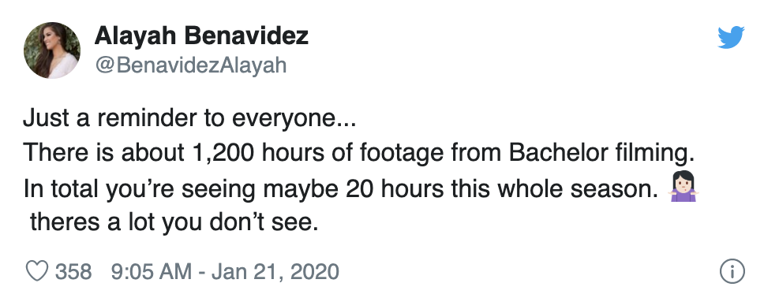

From Champagne Gate to the appearance of The Bachelorette‘s Hannah Brown, Peter Weber’s season of The Bachelor is certainly one for the books — and it doesn’t look like things are slowing down anytime soon. A lot of drama goes down in the trailer for The Bachelor Season 24 Episode 4, including the return of Alayah Benavidez, who was eliminated in the previous episode. So why does Alayah come back to Weber’s season? It appears the teaser already spilled the beans on the former Miss Texas’ reasoning.
Throughout The Bachelor episode on Jan. 20, Sydney Hightower makes her distaste for Alayah known. In a confessional, Sydney calls Alayah “fake,” explaining the pageant queen acts differently in front of the cameras.
Eventually, Sydney confronts Alayah. She asks the former Miss Texas USA 2019 about her job, and Alayah tells her she has three. But Sydney wants to know more about Alayah’s pageant past and whether the lifestyle has affected her life. Unphased, Alayah explains the pageant world has taught her how to speak with people without offending them. She also learned “how to answer without answering” a question she doesn’t want to respond to.
Later, Sydney gets some time with Weber and warns him about women who turn into different people once the cameras are on. Weber is shocked and he lets his concerns known to everyone at the group date. And then Weber puts Sydney on the spot to rat out exactly who she was talking about… in front of everyone. She names Alayah and for the rest of the episode, Alayah tries to defend her character to Weber.
Meanwhile, after the group date, Weber speaks to the other women. A few of them also call Alayah out for her fake persona. But Weber seems to trust Alayah until he hears from Victoria Paul, the former Miss Louisiana. According to Victoria P., she knew Alayah before the show. But Alayah told her not to tell producers about their past.
Once again, Weber speaks with Alayah, who owns up to the accusation. She claims she was worried about being disqualified. But Weber says her actions aren’t genuine.
Then at the rose ceremony, Weber panics and has to stop when reaching the final two roses. He exits the room and speaks with Chris Harrison. But when Weber steps out, Harrison removes one rose. And ultimately, he eliminates Alayah. That said, Weber isn’t 100 percent confident in his decision.
” I don’t feel good right now,” Weber tells a producer. “I feel like I’m going to regret this like crazy.”
In the preview for the Jan. 27 episode, Alayah returns to The Bachelor. Midway through the teaser, Alayah walks up the stairs at what appears to be a group date cocktail party. She waves at the women, blows a kiss, and walks off. Then in a confessional, Tammy Ly says, “Drama has risen from the dead.”
The trailer flashes to a shot between Alayah and Weber. “I’m here to freaking set the record straight about what was said about me,” Alayah says. Weber looks at her in the eyes and replies, “I’m obviously being lied to by someone.”
Later, it seems the women are unhappy with Weber. “She’s manipulating you the same way she manipulated me,” Victoria P. says. Meanwhile, Deandra Kanu tells someone, “It’s like the biggest slap in the face. I couldn’t even look at you.”
Now, Victoria P. was clearly speaking with Weber. It’s possible they’re discussing the Alayah situation, given her remarks in the third episode. However, the preview can’t confirm who Deandra is upset with. Regardless, it’s clear Alayah is back on The Bachelor to ensure Weber knows her side of the story. But does this mean Weber will bring Alayah back on the show? Fans will have to wait and see.
According to Bachelor Nation blogger Reality Steve, the fourth week of Weber’s season will have plenty of drama surrounding Alayah. As we saw in the preview, Alayah returns during a group date and tells Weber she is there for him. But in the end, he gives her the group date rose.
Naturally, the women on the group date were not happy with Weber’s decision. Then to make matters worse, Alayah heard about Chase Rice and Victoria Fuller’s past relationship and told the other women. Thus causing a rift between Victoria F. and Alayah.
Nevertheless, Reality Steve revealed Alayah leaves at the cocktail party ahead of the fourth rose ceremony because she felt “no one in the house was on her side.” But the blogger isn’t sure whether the ABC reality series will portray it like “Alayah wanted to leave after she felt she was attacked in the house” or because “Peter changed his mind and told her she should leave because him giving her the group date rose when she came back caused too many problems.”
